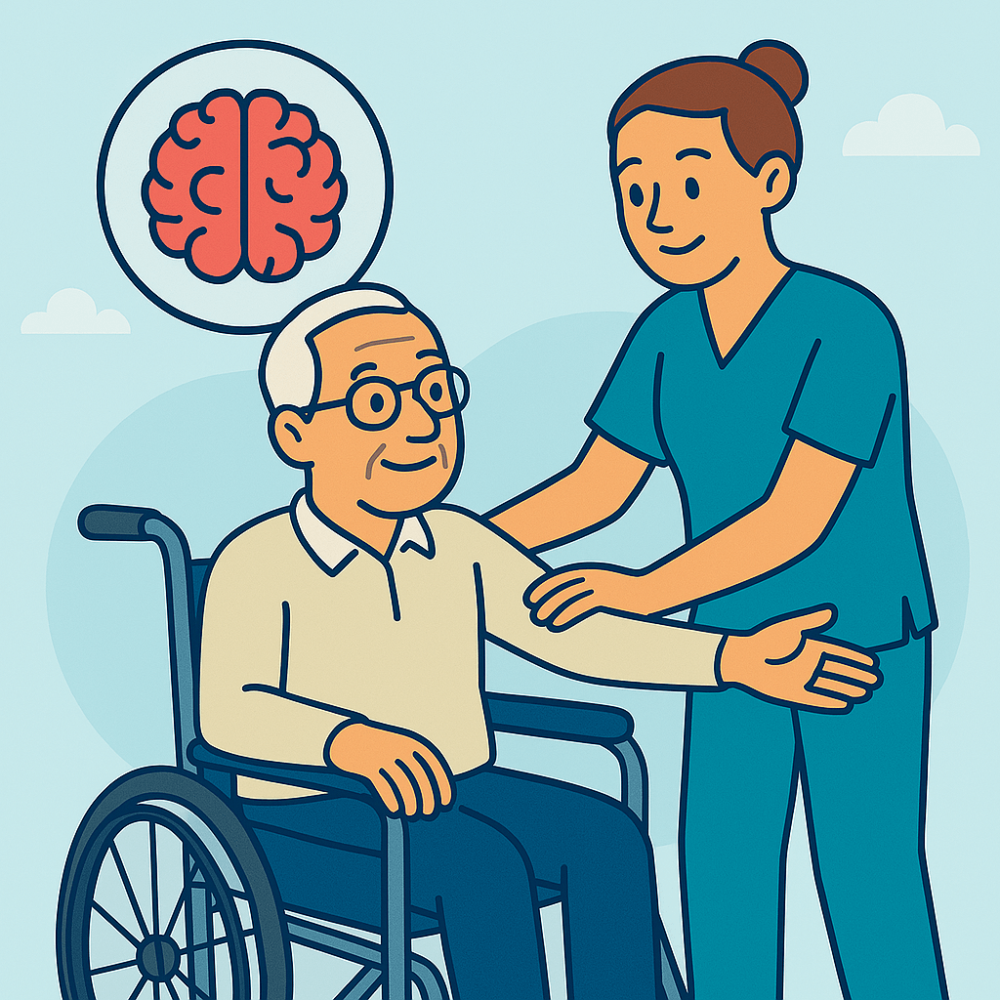

Fisioterapia Neurológica
¿Qué es la Fisioterapia Neurológica?
La fisioterapia neurológica es una especialidad de la fisioterapia que se centra en la rehabilitación de pacientes que han sufrido alteraciones en el sistema nervioso, ya sea por un accidente cerebrovascular, lesiones medulares, enfermedades neurodegenerativas o traumatismos. Nuestro objetivo es ayudar a las personas a recuperar la movilidad, el equilibrio y la calidad de vida, empleando técnicas especializadas y adaptadas a cada situación.
¿En qué consiste la Fisioterapia Neurológica?
La fisioterapia neurológica se basa en la estimulación de los mecanismos de neuroplasticidad del cerebro y la médula espinal. Esto significa que, a través de ejercicios específicos y terapias manuales, se busca "reentrenar" al sistema nervioso para que recupere funciones perdidas o dañadas.
- Ejercicios de movilidad: Para mejorar la flexibilidad y fuerza de las articulaciones.
- Terapia de equilibrio: Ayuda a prevenir caídas y a restaurar la postura correcta.
- Estimulación sensorial: Para recuperar la percepción y coordinación del cuerpo.
¿Por qué es tan importante?
La fisioterapia neurológica es clave para mejorar la funcionalidad en pacientes con enfermedades como el Parkinson, la esclerosis múltiple, los ictus (ACV) y las lesiones medulares. Con un tratamiento adecuado, se pueden lograr grandes avances en la movilidad, reduciendo el dolor y evitando complicaciones adicionales. Además, la rehabilitación temprana es fundamental para obtener los mejores resultados.
Contamos con profesionales especializados que acompañan a cada paciente en su proceso de recuperación, utilizando tecnologías avanzadas y un enfoque integral para lograr una mejora continua.
¿Necesitas más información?
Si tienes alguna pregunta o necesitas más detalles sobre nuestros servicios, ¡no dudes en contactarnos!
Contáctanos